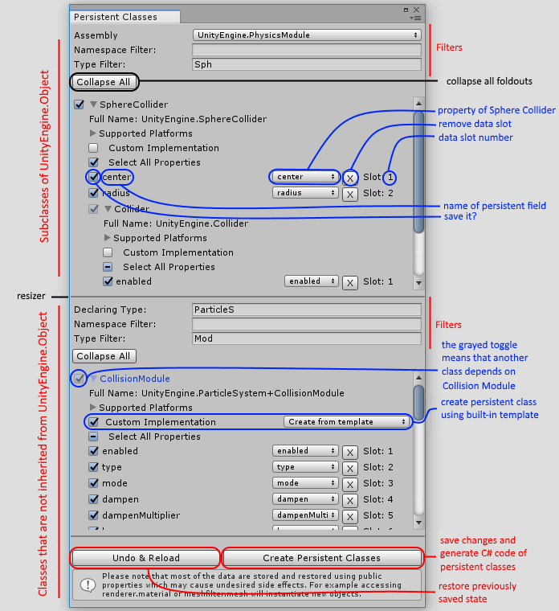
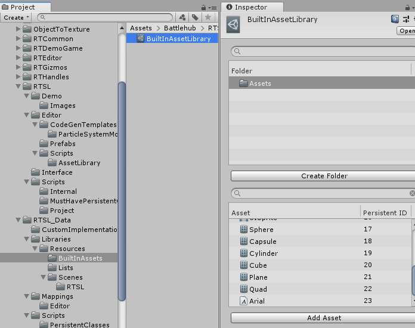

#Save Load Docs ##Overview
The Runtime Save & Load (RTSL) subsystem is required for saving and managing scenes, assets and projects at runtime and consists of three main parts:
- Persistent Classes - this part allows you to choose what to serialize and generate persistent classes for serialization.
- Asset Libraries - this part allows you to create and manage assets, as well as provide information to the RTSL to identify these assets.
- Project - this part provides api to interact with RTSL.
Note
RTSL use protobuf.net for serialization.

##Getting Started
After importing RTSL you will see the configuration window:

After clicking "Build All", several folders will be created under /Battlehub/RTSL_Data

- Scripts for serializable persistent classes.
- Custom Implementation for user defined persistent classes.
- Mappings for mappings between types that must be stored and serializable persistent types.
- Libraries for asset libraries and shader profiles.
Note
RTSLTypeModel.dll contains protobuf-net type model. Due to unity scripting restrictions, runtime type model need to be pre-complied before using at runtime.
Create a new scene.
Drag and Drop Assets/Battlehub/RTEditorDemo/Content/Runtime/RTEditor/DemoGame/
Prefabs/Game.prefab to hierarchy.
Click Tools->Runtime SaveLoad->Update Libraries

Click Tools->Runtime SaveLoad->Create RTSL
Create RTSLExample script and add it to the Game Object created at previous step.
Hit play.
Save scene using 'M' key.
Load scene using 'L' key.
using System.Collections;
using UnityEngine;
using UnityEngine.SceneManagement;
using Battlehub.RTCommon;
using Battlehub.RTSL.Interface;
public class RTSLExample : MonoBehaviour
{
IProject m_project;
IEnumerator Start()
{
m_project = IOC.Resolve<IProject>();
yield return m_project.OpenProject("My Project");
yield return m_project.CreateFolder("Scenes/Demo");
}
IEnumerator SaveScene()
{
ProjectAsyncOperation ao = m_project.Save("Scenes/Demo/Scene", SceneManager.GetActiveScene());
yield return ao;
if(ao.Error.HasError)
{
Debug.LogError(ao.Error.ToString());
}
}
IEnumerator LoadScene()
{
ProjectAsyncOperation ao = m_project.Load<Scene>("Scenes/Demo/Scene");
yield return ao;
if (ao.Error.HasError)
{
Debug.LogError(ao.Error.ToString());
}
}
void Update()
{
if (Input.GetKeyDown(KeyCode.M))
{
StartCoroutine(SaveScene());
}
if (Input.GetKeyDown(KeyCode.L))
{
if (m_project.Exist<Scene>("Scenes/Demo/Scene"))
{
StartCoroutine(LoadScene());
}
}
}
}
Saved scene can be found in PersistentDataPath/My Project/Assets/Scenes/Demo folder.
Note
Only several persistent classes enabled by default. Use Persistent Classes Editor Window to enable more.
Note
Demo scene can be found in Assets/Battlehub/RTEditorDemo/Content/Runtime/RTSL folder.
##Persistent Classes
Persistent Class is a class derived from Persistent Surrogate and has the [ProtoContract] attribute . The main purpose of persistent classes is to give you complete control over what to save and how to save, without having to use reflection and without writing a lot of boilerplate code.
To open persistent classes editor, click Tools->Runtime SaveLoad->Persistent Classes->Edit.

Here is the persistent classes editor window:

This window allows you:
- Search for types you want to save.
- Select properties you want to save.
- Generate C# code of persistent classes.
After clicking the "Create Persistent Classes" button the following will occur:
- Persistent classes will be created in Assets/Battlehub/RTSL_Data/Scripts/PersistentClasses.

<br/><br/>
- The editor window state will be saved in Assets/Battlehub/RTSL_Data/Mappings/Editor.

<br/><br/>
- Custom Implementations will be created in .../RTSL_Data/Scripts/CustomImplementation.

<br/><br/>
Note
To ensure forward compatibility of saved files, never delete the ClassMappingStorage and SurrogatesMappingsStorage prefabs !!!
##How To: Create Custom Persistent Class
In some cases, it is not possible to obtain all data to be saved using public properties and fields. For example, some data can only be retrieved using methods. If you need to write your own code to save and load data, follow these steps:
- Open Persistent Classes Editor.
- Find and select required type.
- Select "Custom Implementation"

<br/><br/>
- Click Create Persistent Classes button.
- Click Edit Custom Implementation button.

<br/><br/>
- You should see following:
#if !RTSL_MAINTENANCE
using Battlehub.RTSL;
namespace UnityEngine.Battlehub.SL2
{
[CustomImplementation]
public partial class PersistentJoint<TID>
{
/*
public override void ReadFrom(object obj)
{
base.ReadFrom(obj);
}
public override object WriteTo(object obj)
{
return base.WriteTo(obj);
}
public override void GetDeps(GetDepsContext<TID> context)
{
base.GetDeps(context);
}
public override void GetDepsFrom(object obj, GetDepsFromContext context)
{
base.GetDepsFrom(obj, context);
}
*/
}
}
#endif
There are four methods that can be implemented:
void ReadFrom(object obj)- called before serialization. Read the data from obj and save it to the fields of the persistent object.object WriteTo(object obj)- called after deserialization. Write stored data to obj.void GetDeps(GetDepsContext<TID> context)- return IDs of dependencies.void GetDepsFrom(object obj, GetDepsFromContext context)- get dependencies from obj.
Implementation of PersistentJoint may look like this:
#if !RTSL_MAINTENANCE
using Battlehub.RTSL;
namespace UnityEngine.Battlehub.SL2
{
[CustomImplementation]
public partial class PersistentJoint<TID>
{
[ProtoBuf.ProtoMember(1)]
private TID m_connectedBody;
[ProtoBuf.ProtoMember(2)]
private PersistentVector3<TID> m_anchor;
//..... more fields
public override void ReadFrom(object obj)
{
base.ReadFrom(obj);
Joint joint = (Joint)obj;
if (joint == null)
{
return;
}
m_connectedBody = ToID(joint.connectedBody);
m_anchor = joint.anchor;
//... read other fields
}
public override object WriteTo(object obj)
{
obj = base.WriteTo(obj);
Joint joint = (Joint)obj;
if (joint == null)
{
return obj;
}
joint.connectedBody = FromID<Rigidbody>(m_connectedBody);
joint.anchor = m_anchor;
//... write other fields
return joint;
}
public override void GetDeps(GetDepsContext<TID> context)
{
base.GetDeps(context);
AddDep(m_connectedBody, context);
//... get other dependencies
}
public override void GetDepsFrom(object obj, GetDepsFromContext context)
{
base.GetDepsFrom(obj, context);
Joint joint = (Joint)obj;
if (joint == null)
{
return;
}
AddDep(joint.connectedBody, context);
//... get other dependencies
}
}
}
#endif
Note
Click Tools-> Runtime SaveLoad->Config->Build All every time you finish making changes to the persistent classes and are ready to build your application.
##Asset Library
Game objects in any scene refer assets such as materials, meshes, textures, etc.
Identifiers of these assets obtained using GetInstanceID() method do not remain constant and can change.
Asset libraries, in contrast, are used to store unique asset identifiers that never change.
There are two special asset libraries:
- Built-in asset library - contains Unity build-in assets.
- Scene asset library - contains assets referenced by scene Game Objects.
Both libraries created automatically by clicking Tools->Runtime SaveLoad->Update Libraries

Note
Scene asset libraries are referenced using the scene name. This means that scenes must have unique names.
Note
Click Tools->Runtime SaveLoad->Update Libraries each time you have finished making changes to the scene and are ready to run the application.
##How To: Create Asset Library
If the built-in asset library and scene dependency library are not sufficient,
and the new resources must be Resource.Loaded at runtime, you can create
a new asset library by clicking
Create -> Runtime SaveLoad -> Runtime Asset Library in the context menu.

Note
An asset library must be created inside the Resources folder.
Use drag & drop to add assets to asset library

Note
One asset library can contain no more than 65535 assets.
If you change hierarchy of one or more prefabs, you will be asked to synchronize the assets library. Do it by clicking Synchronize button.

##Project Item & Asset Item
Project Items are used to create tree structures representing the project tree.
[ProtoContract]
[ProtoInclude(1, typeof(AssetItem))]
public class ProjectItem
{
[ProtoMember(2)]
public long ItemID;
[ProtoMember(3)]
public Guid ItemGUID;
public string Name;
public string Ext;
public ProjectItem Parent;
public List<ProjectItem> Children;
// ...
Asset Items are meta representations of assets in a project. They are stored in *.rtmeta files.
[ProtoContract]
public class AssetItem : ProjectItem
{
public event EventHandler PreviewDataChanged;
[ProtoMember(1)]
public Guid TypeGuid;
[ProtoMember(2)]
public PrefabPart[] Parts;
[ProtoMember(3)]
public long[] Dependencies;
[ProtoMember(4, IsRequired = true)]
public long CustomDataOffset = -1;
[ProtoMember(5)]
public Guid[] DependenciesGuids;
private Preview m_preview;
public Preview Preview
{
get { return m_preview; }
set
{
if (m_preview != value)
{
m_preview = value;
if (PreviewDataChanged != null)
{
PreviewDataChanged(this, EventArgs.Empty);
}
}
}
}
public override bool IsFolder
{
get { return false; }
}
}
##Project
IProject is the main interface of the RTSL library. Here is how to access it:
using Battlehub.RTCommon;
using Battlehub.RTSL.Interface;
void Awake()
{
IProject project = IOC.Resolve<IProject>();
}
Open project: ``` C#
using System.Collections; using Battlehub.RTCommon; using Battlehub.RTSL.Interface;
IEnumerator Start()
{
IProject project = IOC.Resolve
<br/>
Close project:
``` C#
m_project.CloseProject();
Delete project: ``` C# yield return project.DeleteProject("My Project"); ```
Create folder: ``` C# yield return project.CreateFolder("My Scenes"); ```
Delete folder: ``` C# yield return project.DeleteFolder("My Scenes"); ```
Save scene: ``` C#
using System.Collections;
using UnityEngine; using UnityEngine.SceneManagement;
using Battlehub.RTCommon; using Battlehub.RTSL.Interface;
IEnumerator Start() { //...
ProjectAsyncOperation ao = project.Save("My Scenes/Scene 1", SceneManager.GetActiveScene());
yield return ao;
if (ao.Error.HasError)
{
Debug.LogError(ao.Error.ToString());
}
}
<br/>
Load scene:
``` C#
using System.Collections;
using UnityEngine;
using UnityEngine.SceneManagement;
using Battlehub.RTCommon;
using Battlehub.RTSL.Interface;
IEnumerator Start()
{
//...
ProjectAsyncOperation ao = project.Load<Scene>("My Scenes/Scene 1");
yield return ao;
if (ao.Error.HasError)
{
Debug.LogError(ao.Error.ToString());
}
}
Delete scene: ``` C# yield return project.Delete
Find objects of type: ``` C# foreach(string scene in project.Find
<br/>
Create Prefab:
``` C#
GameObject primitive = GameObject.CreatePrimitive(PrimitiveType.Capsule);
yield return project.Save("Capsule", primitive);
Destroy(primitive);
Load and instantiate Prefab: ``` C# ProjectAsyncOperation
if(!ao.Error.HasError) { Instantiate(ao.Result[0]); }
<br/>
Import all assets from asset bundle:
``` C#
//get names of asset bundles from Assets/StreamingAssets folder.
ProjectAsyncOperation<string[]> ao = project.GetAssetBundles();
yield return ao;
//load ImportItems from first asset bundle
ProjectAsyncOperation<ProjectItem> loadAo = project.LoadImportItems(ao.Result[0], false);
yield return loadAo;
if (!loadAo.Error.HasError)
{
//create previews here...
//then unload asset bundle assets
project.UnloadImportItems(loadAo.Result);
//import all
yield return project.Import(loadAo.Result.Flatten(true).OfType<ImportItem>().ToArray());
}
//log all asset items in project
foreach(string path in project.Find<object>(string.Empty, true))
{
Debug.Log(path);
}